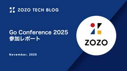

ZOZO TECH BLOG
https://techblog.zozo.com/
ZOZO TECH BLOG
フィード

Go Conference 2025 参加レポート 1
1
ZOZO TECH BLOG
はじめに こんにちは、YSHP部SREブロックの濵砂です。普段は主にシステムリプレイスを担当しています。YSHP部では2025年から、ZOZOTOWN Yahoo!店に関わるシステムを段階的にGoで刷新しています。 2025年9月27日、28日にGo Conference 2025が開催されました。本記事では、会場の様子や印象に残ったトークについてご紹介します。 Go Conference 2025 とは Go Conferenceは、Goエンジニアはもちろん、Goに興味を持つすべての人に学びと交流の場を提供する国内最大のGoのカンファレンスです。去年から久しぶりにオフラインイベントとして行わ…
1日前

Kotlin Fest 2025 参加レポート
ZOZO TECH BLOG
はじめに 2025年11月1日（土）に東京コンファレンスセンター品川で開催された「Kotlin Fest 2025」に、Androidアプリ開発を担当しているメンバーが参加・登壇しました。本記事では、イベントの概要や得られた知見についてご紹介します。 Kotlin Fest とは Kotlin Festは、「Kotlinを愛でる」をテーマに掲げ、Kotlinに関する知見共有とKotlin開発者の交流を目的とした技術カンファレンスです。 Kotlin Fest 2025は2025年11月1日（土）に開催され、Kotlin言語やサーバーサイド、Android、AI等の多種多様なカテゴリについて、2…
11日前
「Gemini in Looker」で実現するダッシュボード要約機能
ZOZO TECH BLOG
はじめに こんにちは、データ・AIシステム本部データシステム部データ基盤ブロックの栁澤（@i_125）です。私はデータ基盤の安定化・効率化を目指しつつ、Analytics Engineerとしてデータ利活用領域にも踏み込み、データマート整備やLooker周辺の整備・サポートに取り組んでいます。本記事では、Lookerダッシュボードに生成AIによる要約機能を組み込んだ「Gemini in Looker」の活用事例をご紹介します。
17日前
Embedding基盤の構築と運用 ── Two-Towerモデルのユーザー・商品埋め込み表現を共通資産にする
ZOZO TECH BLOG
はじめに こんにちは。データシステム部・推薦基盤ブロックの上國料（@Kamiko20174481）です。私たちのチームは、ZOZOTOWNの推薦システムを開発・運用し、ユーザー一人ひとりに最適な購買体験を届けることを目指しています。 これまでは施策ごとに推薦システムをゼロベースで構築していたため、施策実施までのリードタイムが長く、推薦システムの運用負荷も高まりやすいという課題がありました。この課題を解決するために、ユーザーや商品をEmbedding（埋め込みベクトル）として表現し、それらを一元的に管理して複数の推薦施策で再利用できる仕組みの構築に取り組みました。以降では、この仕組みをEmbed…
18日前
ZOZOTOWN フロントエンドにおけるディレクトリの分割戦略
ZOZO TECH BLOG
はじめに こんにちは。ZOZOTOWN開発本部フロントエンドの菊地（@hiro0218）です。 2021年、ZOZOTOWNはフロントエンドリプレイスを開始しました。現在、ホームページや商品一覧ページなど主要なページのNext.js化が完了し、運用フェーズに入っています。詳細は以下の記事を参照してください。 techblog.zozo.com 開始当初、他社事例を参考にしながら、よくある課題を未然に防ぐディレクトリ構成を設計しました。本記事では、約4年にわたる運用で改善を重ねてきたディレクトリの分割戦略について紹介します。 ※本記事は2025年8月にちょっと株式会社との合同勉強会で発表した内容…
24日前
Monthly Tech Report 2025年10月
ZOZO TECH BLOG
ZOZO開発組織の2025年10月分の活動を振り返り、ZOZO TECH BLOGで公開した記事や登壇・掲載情報などをまとめたMonthly Tech Reportをお届けします。 ZOZO TECH BLOG 2025年10月は、前月のMonthly Tech Reportを含む計14本の記事を公開しました。このタイミングで6月にリリースした「ZOZOマッチ」関連の記事を一斉に公開しています。ぜひご一読ください。 ZOZOマッチアプリのアーキテクチャと技術構成 FigmaからFlutterへ ── デザイントークン自動変換とUIカタログで実装を加速 デバッグメニューでFlutterのアプリ開…
25日前
サービス断なしで進めるIstio OperatorからHelmへの移行
ZOZO TECH BLOG
はじめに こんにちは、SRE部プラットフォームSREブロックのさかべっちです。2025年度に新卒で入社しました。普段はZOZOTOWNにおけるプラットフォーム基盤の運用・改善を担当しています。 本記事では、Istio Operatorが非推奨となったことを受けて、サービス断を一切発生させることなくHelmへの移行を完遂させた取り組みをご紹介します。移行作業で直面した技術的な課題とその解決方法について、実際の経験をもとに解説します。
1ヶ月前
ZOZOマッチにおけるモデル開発の不確実性との向き合い方
ZOZO TECH BLOG
はじめに こんにちは、データシステム部MA推薦ブロックの佐藤（@rayuron）です。私たちは、主にZOZOTOWNのメール配信のパーソナライズなど、マーケティングオートメーションに関するレコメンドシステムを開発・運用しています。 早速ですが、先日ZOZOマッチというサービスをリリースしました。 corp.zozo.com 新規サービスのアルゴリズム開発では、既存サービスと異なり、ユーザー行動データが存在しない状態からスタートします。本記事では、ZOZOマッチのレコメンドアルゴリズム開発において、リリース前のモデル性能やシステム負荷に関する不確実性にどう向き合い、リリースまでたどり着いたかを紹…
1ヶ月前
ZOZOマッチアプリのメッセージ機能を支えるFlutter × GraphQLの実装
ZOZO TECH BLOG
はじめに こんにちは、新規事業部フロントエンドブロックの池田です。普段はZOZOマッチのアプリ開発を担当しています。2025年6月にマッチングアプリ「ZOZOマッチ」をリリースしました。ZOZOマッチにはメッセージ機能があり、この機能を実現するためにGraphQLを用いています。本記事ではFlutterアプリでGraphQLを用いたリアルタイムメッセージ機能の開発の知見と工夫した点をご紹介します。 なお、ZOZOマッチアプリ全体のアーキテクチャや技術構成については、別記事「ZOZOマッチアプリのアーキテクチャと技術構成」で詳しく紹介しています。
1ヶ月前
デバッグメニューでFlutterのアプリ開発をスムーズに！
ZOZO TECH BLOG
はじめに こんにちは、新規事業部フロントエンドブロックの大野純平です。2025年度に新卒入社し、現在のチームに配属されました。2025年6月に新規事業としてリリースされた、全身見える直感型マッチングアプリ「ZOZOマッチ」のアプリ開発を担当しています。「ZOZOマッチ」は、ZOZOとして初めてFlutterを採用したモバイルアプリです。 zozomatch.jp ZOZOマッチの開発では、様々な状態を再現する作業に多くの時間を費やしており、効率化が課題となっていました。 本記事では、この課題を解決するデバッグメニューの作り方と効果的な機能を紹介します。
1ヶ月前
SREcon25 Europe/Middle East/Africa 参加レポート
ZOZO TECH BLOG
はじめに こんにちは、計測プラットフォーム開発本部SREブロックの纐纈です。 2025年10月6日〜9日にダブリンで開催されたSREcon25に参加してきました。本記事では、現地の様子と気になったセッションについて報告いたします。 目次 はじめに 目次 SREconとは 現地の様子 セッション紹介 SRE for AI and AI for SRE インシデントの概要 学んだこと Why Risk Management Requires Taking Risks: A Practical Guide to Getting SRE Teams AI-Ready AI活用の段階的アプローチ 具体的…
1ヶ月前
商品画像の背景がCTRに与える影響分析 ── Gemini APIで実現した自動分類と統計検証
ZOZO TECH BLOG
はじめに こんにちは、データサイエンス部商品データサイエンスブロックで内定者アルバイト中のしゅがーです。我々のチームでは、AIやデータサイエンスを活用したプロダクト開発のため、研究開発に取り組んでいます。本記事では、Geminiを用いて商品画像を分類する方法と背景がCTRへ与える影響を分析した結果をご紹介します。 目次 はじめに 目次 背景・課題 分析手法 データセット作成（Geminiによる背景ラベル付与） プロンプトの工夫と試行錯誤 分類精度の検証方法 バッチ処理を利用した推論速度の向上 背景以外の要素がCTRに差を生まないことを検証 背景がCTRに差が生むことを検証 まとめ 最後に 背景…
1ヶ月前
FigmaからFlutterへ ── デザイントークン自動変換とUIカタログで実装を加速
ZOZO TECH BLOG
はじめに こんにちは、新規事業部フロントエンドブロックの安土琢朗です。普段はZOZOマッチのFlutterアプリ開発を担当しています。 ZOZOマッチは2025年6月にリリースされた、ゼロから立ち上げたマッチングアプリです。zozomatch.jp本記事では、開発初期から取り組んできたデザインシステムの導入によって、どのように開発効率とUIの品質を向上させたか、そしてそれを支える具体的な運用プロセスや仕組みについてご紹介します。 プロダクトを継続的に成長させるうえで、デザインと実装のズレを最小化し、誰が開発しても一定の品質が保たれる状態をどう実現するかは重要なテーマです。その課題に対し、私たち…
1ヶ月前
ZOZOマッチアプリのアーキテクチャと技術構成
ZOZO TECH BLOG
はじめに こんにちは、ZOZOの堀江（@Horie1024）です。2025年6月、新規事業として「ZOZOマッチ」をリリースしました。ZOZOマッチは、ZOZOとして初めてFlutterを採用したモバイルアプリです。これまでiOS/Androidそれぞれでの開発体制をとってきた中でFlutterでのクロスプラットフォーム開発に舵を切るのは、ZOZOにとって新しい挑戦でした。 本記事は、社外登壇イベント「ナレッジナイト」で使用した資料1をベースに、一部内容を加筆・整理してまとめたものです。私たちがFlutterを選定した背景と、実際のアーキテクチャ・技術構成について紹介します。ZOZOにおける新…
1ヶ月前
Monthly Tech Report 2025年9月
ZOZO TECH BLOG
ZOZO開発組織の2025年9月分の活動を振り返り、ZOZO TECH BLOGで公開した記事や登壇・掲載情報などをまとめたMonthly Tech Reportをお届けします。 ZOZO TECH BLOG 2025年9月は、前月のMonthly Tech Reportを含む計13本の記事を公開しました。特に次の3記事はとても多くの方に読まれています。 techblog.zozo.com techblog.zozo.com techblog.zozo.com ZOZO DEVELOPERS BLOG ブランドソリューション開発本部でZOZOマッチの開発に携わった御立田と大野の対談記事を公開し…
2ヶ月前
【イベントレポート】「LINEヤフー × ZOZO コラボ Meetup ～データサイエンス～」を開催しました！
ZOZO TECH BLOG
【イベントレポート】「LINEヤフー × ZOZO コラボ Meetup ～データサイエンス～」を開催しました！ はじめに こんにちは、AI・アナリティクス本部ビジネスアナリティクス部マーケティングサイエンスブロックの佐々木(@sasaken1209)です。先日8月22日にLINEヤフー株式会社さんと「LINEヤフー × ZOZO コラボ Meetup ～データサイエンス～」を開催しました。各社の「ABテストから学んだ教訓」にフォーカスして、データサイエンティストたちが具体的な事例を交えながら紹介するオフラインイベントです。 登壇内容まとめ ZOZOからは次の2名が登壇しました。 発表タイトル…
2ヶ月前
iOSDC Japan 2025協賛&参加レポート
ZOZO TECH BLOG
こんにちは、DevRelブロックのikkou（@ikkou）です。2025年9月19日の夕方から21日の3日間にわたり「iOSDC Japan 2025」が開催されました。ZOZOは昨年同様プラチナスポンサーとして協賛し、スポンサーブースを出展しました。 iOSDC Japan 2025 エントランス technote.zozo.com 本記事では、前半は「iOSエンジニアの視点」から、ZOZOから登壇したセッションとiOSエンジニアが気になったセッションを紹介します。そして後半は「技術広報の視点」から、ZOZOの協賛ブースの様子と各社のブースコーデのまとめを写真多めでお伝えします。 登壇内容…
2ヶ月前
ZOZOMAT RendererにおけるOpenGL ESからMetalへの移行
ZOZO TECH BLOG
はじめに こんにちは、ZOZO New Zealandの中岡です。普段はZOZOMAT/ZOZOGLASSの運用・保守や計測技術を使った新規事業の開発をしています。 目次 はじめに 目次 ZOZOMATとは ZOZOMATの構成 移行の背景 検討したアプローチ 移行後の構成 レンダリングバックエンドの抽象化 ポインタによる抽象化 移行の際に当たった課題と工夫点 Objective-CとC/C++のメモリ管理の違い CFBridgingを使ったリソース管理 座標系の違い まとめ ZOZOMATとは オンラインで靴を購入する際に、サイズが合わないという問題を解決する仕組みです。1台のスマートフォン…
2ヶ月前
RecSys 2025参加レポート
ZOZO TECH BLOG
はじめに こんにちは、データシステム部推薦基盤ブロックの上國料（@Kamiko20174481）とMA推薦ブロックの住安（@kosuke_sumiyasu）です。 私たちは2025年9月22日〜9月26日にチェコのプラハにて開催されたRecSys2025（19th ACM Conference on Recommender Systems）に現地参加しました。本記事では会場の様子や現地でのワークショップ、セッションの様子をお伝えすると共に、気になったトピックをいくつか取り上げてご紹介します。 はじめに RecSys とは 開催地のプラハについて 会場の様子 論文の紹介 Orthogonal L…
2ヶ月前
マイクロサービス間通信の複雑化にどう立ち向かうか ── ZOZOTOWNが実践したレイヤ構成による統制
ZOZO TECH BLOG
はじめに こんにちは、ECプラットフォーム部マイクロサービス戦略ブロックの半澤です。普段はアーキテクト領域のテックリードとして、ZOZOTOWNリプレイスにおける全体的な課題解決に注力しています。 今回は、複雑化したZOZOTOWNのマイクロサービス間通信を整理するため、レイヤ構成を定義し、ガイドライン化した取り組みについてご紹介します。
2ヶ月前
フロントエンドカンファレンス東京 2025 参加レポート
ZOZO TECH BLOG
こんにちは！ ZOZOTOWN開発本部フロントエンドエンジニアの齋藤（@Jin_pro_01）です。9月21日に渋谷のAbema Towersにて「フロントエンドカンファレンス東京2025」が開催され、登壇者、当日スタッフを含めZOZOから5名が参加しました。本記事では、参加した経緯や、各参加者から印象に残ったトークについてご紹介します。 フロントエンドカンファレンス東京とは 社内での参加経緯と当日の取り組み 各参加者からの感想、印象に残ったトークの内容 日本語縦書きWebの現在地2025 "フロントエンドの技術"を移行する技術 爆速でプロダクトをリリースしようと思ったらマイクロフロントエンド…
2ヶ月前
ZOZOTOWN Yahoo!店基盤リプレイスにおける技術的意思決定 ── Go・ECS・AWS採用の評価観点
ZOZO TECH BLOG
はじめに こんにちは、YSHPブロックの岩切です。普段はシステムリプレイスを担当しています。YSHPブロックでは2025年から、ZOZOTOWN Yahoo!店に関わる連携基盤を段階的に刷新しています。 本記事では、移行初期の意思決定（言語・実行基盤・クラウド移行方針）にフォーカスし、判断材料・比較観点・想定される課題とその回避策を整理して紹介します。 目次 はじめに 目次 背景・課題 言語サポートの終了（EOL） 規模拡大への追随 全社標準との不整合 言語選定：なぜGoを選んだのか 起動性とコンテナ効率 並行処理のしやすさ 学習コストとチーム適性 留意点 インフラ移行：Windowsサーバか…
2ヶ月前
DroidKaigi 2025協賛&参加レポート
ZOZO TECH BLOG
こんにちは、技術戦略部のikkouです。2025年9月10日から12日の3日間にわたり「DroidKaigi 2025」が開催されました。ZOZOはゴールドスポンサーとして協賛し、12日と13日の2日間にわたりスポンサーブースを出展しました。 DroidKaigi 2025 フォトスポット technote.zozo.com 本記事では「Androidエンジニアの視点」でZOZOから登壇したセッションと気になったセッションの紹介、そして「技術広報の視点」で協賛ブースの様子と各社のブースコーデのまとめ、後日開催したアフターイベントについてまとめてお伝えします。 登壇内容の紹介 これでもう迷わない…
2ヶ月前
数十億レコードをゼロダウンタイム移行 ── SQL ServerからAurora MySQLへのデュアルデータベース戦略
ZOZO TECH BLOG
はじめに こんにちは。商品基盤部・商品基盤2ブロックの小原です。私が所属するブロックではお気に入り機能のマイクロサービスを担当しています。 ZOZOTOWNではさらなる成長に向けて、さまざまなリプレイスプロジェクトが進行中です。本記事では、その中でもお気に入り機能のリプレイスについて紹介します。SQL ServerからAurora MySQLへ数十億レコードをゼロダウンタイムで移行するために設計したデュアルデータベース戦略を解説します。 こんな方に読んでもらいたい 段階的なマイクロサービス移行戦略を策定する担当者 ゼロダウンタイム移行の手法を探すアーキテクト Spring BootでマルチDa…
2ヶ月前
LLMを駆使したSlackbotによる例外アラート調査・分析の自動化
ZOZO TECH BLOG
はじめに こんにちは、ZOZOMO部OMOブロックの宮澤です。普段は「ZOZOMO」のブランド実店舗の在庫確認・在庫取り置きという機能の開発と保守を担当しています。 本記事では、LLMを駆使したSlackbotを活用して、アプリケーション例外のアラート調査・分析を自動化した試みについて紹介します。 SlackbotのバックエンドにLLMを導入し、LLMの汎用的な推論能力とMCPを通じたプロダクト知識の注入を用いて、より実践的な調査・分析の自動化を試みました。 本記事がLLMを活用した運用作業の自動化を検討されている方の参考になれば幸いです。 目次 はじめに 目次 試みの背景 LLM・MCPによ…
2ヶ月前
「同じ商品ばかり」の表示は購入されないのか ── ZOZOTOWN検索ログ分析から見る商品再表示の現状
ZOZO TECH BLOG
はじめに こんにちは、データサイエンス部・検索研究ブロックの諸田です。私たちはZOZOTOWNのおすすめ順検索の品質向上を目指し、機械学習モデルの継続的な改善に取り組んでいます。 私たちは現状の検索体験に関する課題を分析して、改善に役立てています。本記事では課題分析の取り組みの中で、商品の再表示に関する内容について紹介します。同じような課題を抱えている方にとって、仮説の立て方や仮説が正しいかどうかをデータから明らかにする流れの参考になれば幸いです。
2ヶ月前
MIRU2025参加レポート
ZOZO TECH BLOG
こんにちは。データサイエンス部データサイエンスブロック2の荒木・西山・桐島です。我々のチームでは、AIやデータサイエンスを活用したプロダクト開発のため、研究開発に取り組んでいます。 今回は、ZOZO NEXTのメンバーとともに2025年7月29日（火）から8月1日（金）にかけて国立京都国際会館で開催された画像の認識・理解シンポジウム (MIRU) 2025に参加しました。本記事では、MIRU2025でのZOZO・ZOZO NEXTメンバーの取り組み、MIRU2025の様子や参加メンバーの気になった発表を報告します。 MIRU2025 企業展示 全体の動向 ZOZO Researchメンバーの発…
2ヶ月前
運用コストを99%削減 ── ChatOpsによる3社間データ連携の自動化
ZOZO TECH BLOG
はじめに こんにちは、カート決済部カート決済サービスブロックの河津です。2025年度に新卒入社し、現在のチームに配属されました。ZOZOTOWN内のカート機能や決済機能の開発、保守運用を担当しています。 私たちのチームでは、取引先から受け取ったデータを外部サービスへ連携する作業を月2回実施しています。従来は全て手動運用で行っており、30分の作業負担とヒューマンエラーのリスクが課題となっていました。 本記事では、ChatOps構築により、作業時間を30分から数秒へ大幅短縮し、 運用の安全性・効率性・業務の自律性を同時に高めることができた仕組みについて紹介します。 目次 はじめに 目次 背景・課題…
2ヶ月前
カオスエンジニアリングで学ぶ！刷新したMAシステムのリリース前合宿
ZOZO TECH BLOG
はじめに こんにちは、MA部の林です。 ZOZOTOWNでは、プッシュ通知・LINE・メール・サイト内お知らせなどを通じてキャンペーン配信をしています。MA部ではそれらの配信を担うマーケティングオートメーション（MA）システムの開発を担当しています。一部のメンバーは直近3年ほど、マーケティングシステムのリプレイスプロジェクトZOZO Marketing Platform（ZMP）に注力しています。2025年7月にはパーソナライズ・リアルタイム処理のリプレイスが完了し、ZMPフェーズ2としてリリースしました。 しかし、ZMPフェーズ2のリリースには課題がありました。リプレイスプロジェクトに携わっ…
3ヶ月前
本番を再現したシミュレーション試験で安全にリリース！ZOZOTOWNリアルタイムマーケティングシステムのリプレイス
ZOZO TECH BLOG
はじめに こんにちは。MA部MA開発ブロックの平井です。 ZOZOTOWNでは、プッシュ通知・LINE・メール・サイト内お知らせなどを通じてキャンペーン配信をしています。 MA部ではそれらの配信を担うマーケティングオートメーション（MA）システムの開発を担当しています。 私たちは現在、マーケティングプラットフォーム「ZOZO Marketing Platform（ZMP）」の開発を進めています。 そのプロジェクトの一環として、リアルタイムマーケティングシステムのリプレイスを実施しました。 ZMPの詳細については、以下のテックブログをご参照ください。 techblog.zozo.com 本記事で…
3ヶ月前